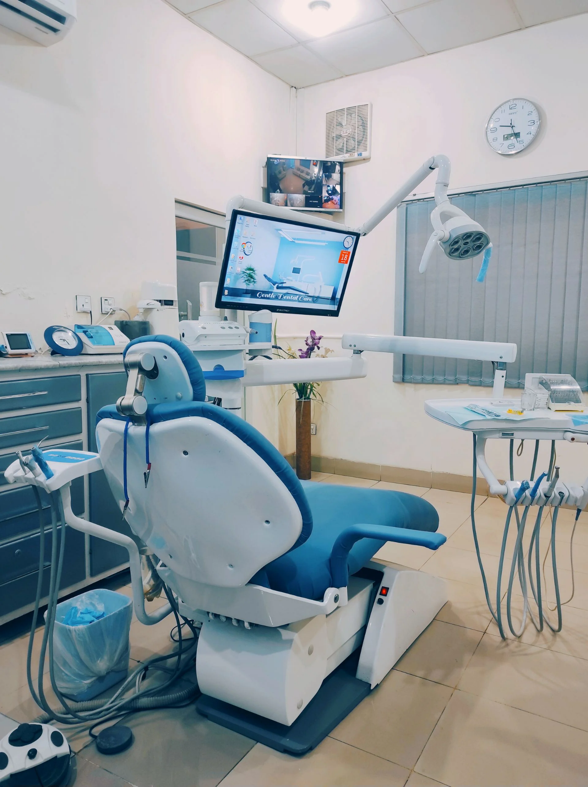

Imagem ilustrativa · não retrata o local ou a equipe
Imagem ilustrativa · não retrata o local ou a equipe01 / Odontopediatria · CROSP 149552
A primeira consulta pode ser leve.
Dra. Natalia Sipionato. Odontopediatra em Mirassol, a Dra. Natalia Sipionato atende bebês e crianças em um consultório planejado para ser lúdico e acolhedor, e fala também com quem cuida: pais e mães.
- Odontopediatria
- CROSP 149552
- Mirassol

Imagem ilustrativa · não retrata o local ou a equipe02 / Conheça a proposta
Odontopediatria em Mirassol.
Atendimento de bebês e crianças
Odontopediatria é a área que a Dra. Natalia apresenta em seu perfil: cuidado com a saúde bucal desde os primeiros anos.
Primeira consulta e prevenção
Ela costuma explicar que não é preciso esperar uma cárie aparecer para marcar a primeira consulta.
Sedação
Atendimento com sedação é um dos destaques do perfil da Dra. Natalia. Indicação, cuidados e segurança são avaliados caso a caso.
Consultório lúdico e acolhedor
Espaço pensado para dar mais conforto, segurança e tranquilidade às crianças e às famílias.
Brinde ao fim da consulta
Rotina de acolhimento própria: a criança é parabenizada pela colaboração e escolhe um brinde ao final.
 Imagem ilustrativa · não retrata o local ou a equipe
Imagem ilustrativa · não retrata o local ou a equipe03 / Trajetória & cuidado
Um consultório pensado para bebês e crianças.
A Dra. Natalia Sipionato é odontopediatra (CROSP 149552) e mostra no Instagram o dia a dia do consultório na Rua São Sebastião, em Mirassol. O tom é de acolhimento: conteúdos sobre quando levar a criança ao dentista pela primeira vez, o medo da consulta e, também, o cuidado com as mães depois do nascimento do bebê.
- Odontopediatria com sedação divulgada em destaque no perfil
- Consultório lúdico e acolhedor, planejado para crianças e famílias
- Brinde ao fim da consulta como reforço positivo
- Conteúdo que também acolhe as mães
 Imagem ilustrativa · não retrata o local ou a equipe
Imagem ilustrativa · não retrata o local ou a equipe04 / Seu próximo passo
Vamos conversar?
Consulte horários, disponibilidade e condições pelo WhatsApp.
Odontopediatria · CROSP 149552